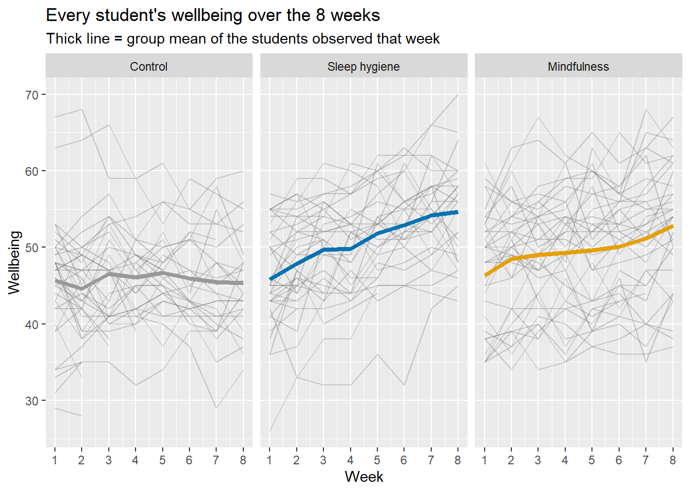
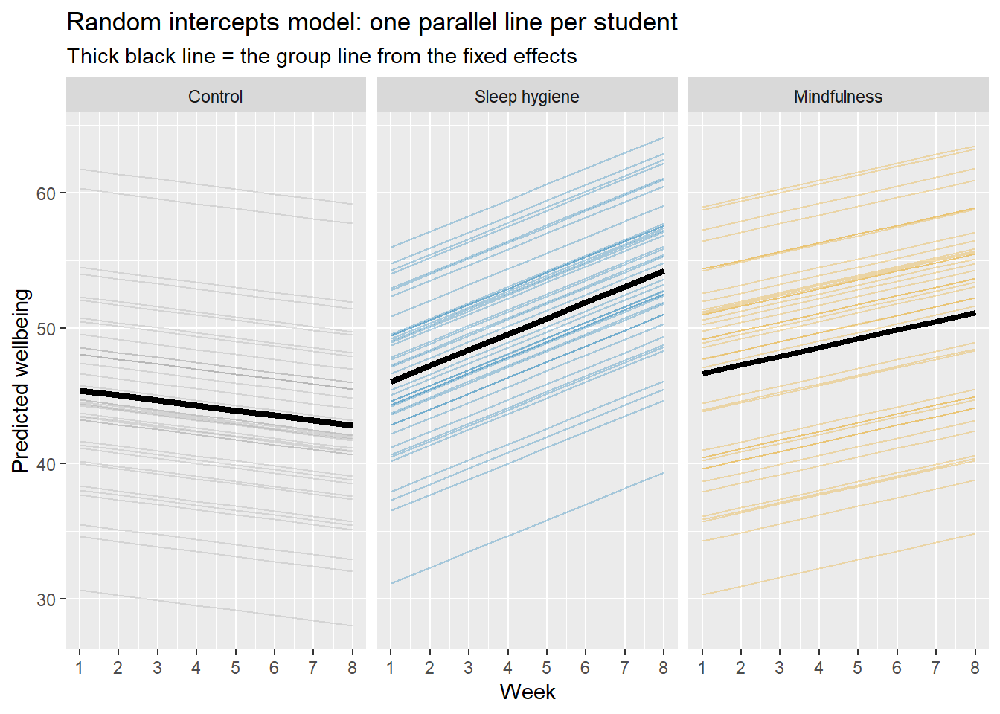
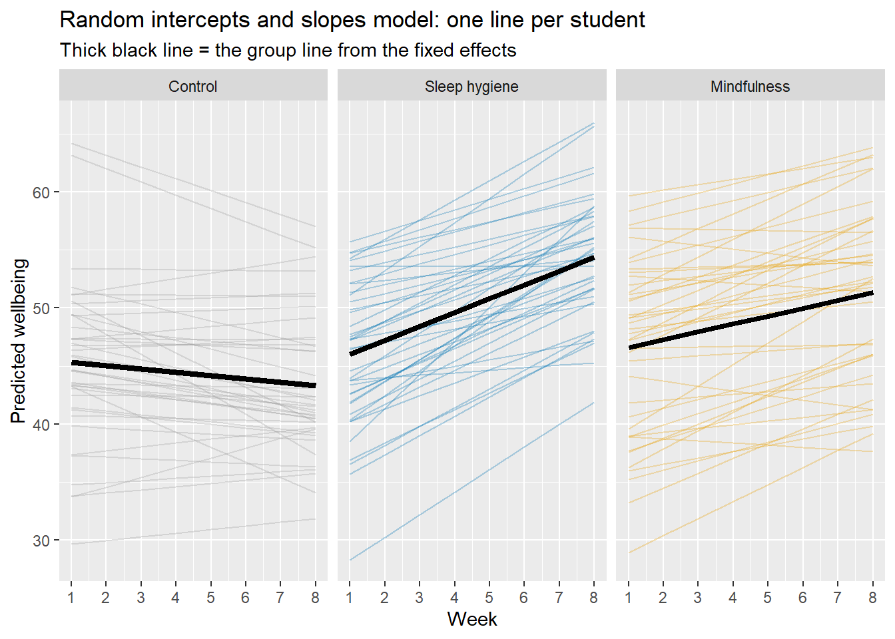
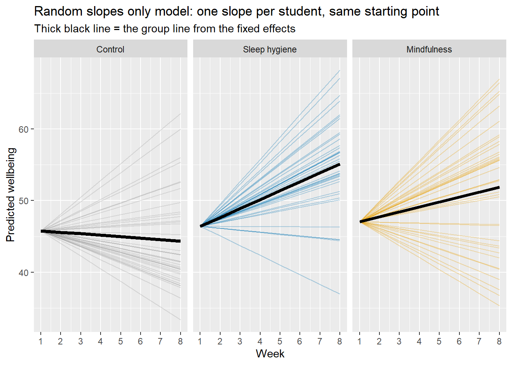

1 - Use RStudio to examine a mixed effects data set
2 - Understand different approaches to analysing this type of data
3 - Carry out regression with a mixed-effects model
4 - Understand how to interpret the output from a mixed-effects model
TODO ### Materials Used:
We will use the packages tidyr, ggplot2, lme4, lmerTest, & rstatix these are already installed on the RStudio Server but if you are working on your own Laptop you may need to install them.
NoteSome general notes about the weekly labs
You should go through the worksheet during the lab and try to complete as much of it during the lab as you can. You can work on the sheet individually or in small groups during the lab. Try to answer the lab worksheet questions in your own words however. If you are unable to finish the worksheet during the class, try to finish it outside class time. Try to attempt the answer before using the ‘Show Answer’ button.
As you go through the sheet, copy the relevant lines of code to your own analysis script.
A complete model answers script will be available on the VLE page from Fridays after the labs so you can check your own answers.
If you have any queries during the class, please feel free to ask your lab tutors. If your question relates specifically to the lecture content or the homework sheets, please contact Peter Holland by email or use the forum on the VLE page.*
CREATE A NEW PROJECT
Just as we did in previous weeks we are going to start by creating a new project for this week’s lab. Download the data from the VLE (In the Week 7 Lab Materials section) and then copy it in the folder you created your project in. You can also find a direct download link for the data here: Github Link.
If you are working on the RStudio Server, then you will need to download the file to your computer and then upload it to the correct folder on the server.
Also create a new script in this folder so you can copy the lines of code needed to run this analysis yourself using just that script.
Given the list of packages above what code do we need to use to load them all?
#library(tidyr)library(ggplot2)library(lme4)
Loading required package: Matrix
library(lmerTest)
Attaching package: 'lmerTest'
The following object is masked from 'package:lme4':
lmer
The following object is masked from 'package:stats':
step
library(knitr)#library(rstatix)
As you will have seen from the answer scripts from previous homeworks and labs it is good to do this at the top of your script instead of just before you use each package.
SECTION A. THE DATASET
The dataset is a the same as used in the Week 6 Lab (It is a more advanced version of the one that was discussed in the Week 1 Lecture when we discussed ways of plotting data).
As a reminder from last week:
120 students take part in an 8-week study. Randomly assigned to one of three conditions: a sleep hygiene programme, a mindfulness app, a control group.
Each week they log their wellbeing scores. We are interested in:
Do wellbeing scores change over time
Does the condition they are in affect wellbeing scores.
However, as with many real world longitudinal data sets some students have dropped out of the study at different times, so we have missing data.
However, for this week we are going to skip the initial processing steps and load the data in it’s mixed model ready format. To create this .csv file I used the code write.csv(df_long,"sleep_study_mixed_long.csv") after the processing steps in section end of Lab 6. Section A.
Next we read the data.
df_long <-read.csv("sleep_study_mixed_long.csv")
What is the code to check the first 10 rows of the data? What format is the data in? What crucial step needs to be repeated? Perform this step
head(df_long, n =10)
X id condition week wellbeing week0
1 1 1 Control 1 42 0
2 2 1 Control 2 44 1
3 3 1 Control 3 41 2
4 4 1 Control 4 41 3
5 5 1 Control 5 40 4
6 6 1 Control 6 37 5
7 7 1 Control 7 29 6
8 8 1 Control 8 34 7
9 9 2 Control 1 53 0
10 10 2 Control 2 45 1
summary(df_long)
X id condition week
Min. : 1.0 Min. : 1.00 Length :802 Min. :1.000
1st Qu.:201.2 1st Qu.: 32.00 N.unique : 3 1st Qu.:2.000
Median :401.5 Median : 62.00 N.blank : 0 Median :4.000
Mean :401.5 Mean : 62.00 Min.nchar: 7 Mean :4.273
3rd Qu.:601.8 3rd Qu.: 93.75 Max.nchar: 13 3rd Qu.:6.000
Max. :802.0 Max. :120.00 Max. :8.000
wellbeing week0
Min. :26.00 Min. :0.000
1st Qu.:43.00 1st Qu.:1.000
Median :49.00 Median :3.000
Mean :48.65 Mean :3.273
3rd Qu.:54.00 3rd Qu.:5.000
Max. :70.00 Max. :7.000
The data is in long format.
However, if we check the summary we can see that the recoding of the df_long$condition to a factor has been lost in the process of writing/reading to a .csv file.
#create a variable to store our condition labelscond_levels <-c("Control", "Sleep hygiene", "Mindfulness")#change the condition to a factor in the long datadf_long$condition <-factor(df_long$condition, levels = cond_levels)#re-checklevels(df_long$condition)
[1] "Control" "Sleep hygiene" "Mindfulness"
You might also notice that we now have an extra column df_long$X, this is just the row number. We can remove this in many different ways but one is to use subset() like we have done previously:
df_long <-subset(df_long, select =-X )
This column wouldn’t have caused any issues in further analysis but it is useful to see how to use the -columnName notation in subset() to remove columns from a dataframe.
Let’s recreate the spaghetti plot from last week.
NOTE: For these complex plots please do not worry about understanding how the code works (unless you want to!), they are for illustrative and educational purposes.
#set up colourscond_cols <-c("Control"="#999999", "Sleep hygiene"="#0072B2", "Mindfulness"="#E69F00")ggplot(df_long, aes(x = week, y = wellbeing, group = id)) +#sets up the initial plot of wellbeing over weeks, split by individual IDgeom_line(alpha =0.3, colour ="grey40") +#plots individuals as grey semi-opaque linesstat_summary(aes(group = condition, colour = condition),fun = mean, geom ="line", linewidth =1.5) +#adds the mean of each group as a thicker line, coloured by the cond_cols (but with default ggplot2 colours)facet_wrap(~ condition) +#splits into 3 subplots based on conditionscale_colour_manual(values = cond_cols) +#uses the actual colours we wantscale_x_continuous(breaks =1:8) +#sets up the ticks on the x axislabs(title ="Every student's wellbeing over the 8 weeks",subtitle ="Thick line = group mean of the students observed that week",x ="Week", y ="Wellbeing") +#adds labelstheme(legend.position ="none") #says not to plot a legend

SECTION B. RANDOM INTERCEPTS AND SLOPES
Last week we created a mixed effects model which looked at the effect of week (week0), condition (condition), their interaction and also allowed random intercept for each participant (id).
What was the Wilkinson notation formula that we used for this? Create a mixed effects model called m_intercepts using this formula
The formula is wellbeing ~ week0 * condition + (1 | id). Below is the code to create the model:
#Fit a model that allows students to have their own intercept (1 | id)m_intercepts <-lmer(wellbeing ~ week0 * condition + (1| id), data = df_long)summary(m_intercepts)
Linear mixed model fit by REML. t-tests use Satterthwaite's method [
lmerModLmerTest]
Formula: wellbeing ~ week0 * condition + (1 | id)
Data: df_long
REML criterion at convergence: 4612.4
Scaled residuals:
Min 1Q Median 3Q Max
-2.8275 -0.6460 -0.0162 0.6079 3.0660
Random effects:
Groups Name Variance Std.Dev.
id (Intercept) 43.69 6.610
Residual 11.53 3.395
Number of obs: 802, groups: id, 120
Fixed effects:
Estimate Std. Error df t value Pr(>|t|)
(Intercept) 45.39393 1.10707 127.62541 41.004 < 2e-16
week0 -0.36980 0.09892 691.24407 -3.738 0.000201
conditionSleep hygiene 0.65895 1.56623 127.77692 0.421 0.674664
conditionMindfulness 1.24765 1.56550 127.50100 0.797 0.426953
week0:conditionSleep hygiene 1.53704 0.13774 690.87014 11.159 < 2e-16
week0:conditionMindfulness 1.01450 0.13250 687.26088 7.656 6.5e-14
(Intercept) ***
week0 ***
conditionSleep hygiene
conditionMindfulness
week0:conditionSleep hygiene ***
week0:conditionMindfulness ***
---
Signif. codes: 0 '***' 0.001 '**' 0.01 '*' 0.05 '.' 0.1 ' ' 1
Correlation of Fixed Effects:
(Intr) week0 cndtSh cndtnM wk0:Sh
week0 -0.242
cndtnSlphyg -0.707 0.171
cndtnMndfln -0.707 0.171 0.500
wk0:cndtnSh 0.174 -0.718 -0.242 -0.123
wk0:cndtnMn 0.181 -0.747 -0.128 -0.247 0.536
We can then use a slightly modified version of the plotting code from last week.
NOTE: For those interested the only thing that has changed was how I matched condition to id as in the old version of the code this relied on the wide format df.
all_students <-expand.grid(id =unique(df_long$id), week0 =0:7)all_students$condition <- df_long$condition[match(all_students$id, df_long$id)] #this line changed to use df_long instead of dfall_students$student_line <-predict(m_intercepts, newdata = all_students)all_students$week <- all_students$week0 +1group_lines <-unique(all_students[, c("condition", "week0", "week")])group_lines$group_line <-predict(m_intercepts, newdata = group_lines, re.form =NA)ggplot() +geom_line(data = all_students, aes(x = week, y = student_line, group = id, colour = condition), alpha =0.3) +geom_line(data = group_lines, aes(x = week, y = group_line, group = condition),colour ="black", linewidth =1.5) +facet_wrap(~ condition) +scale_colour_manual(values = cond_cols) +scale_x_continuous(breaks =1:8) +labs(title ="Random intercepts model: one parallel line per student",subtitle ="Thick black line = the group line from the fixed effects",x ="Week", y ="Predicted wellbeing") +theme(legend.position ="none")

What is the are the two key features of the modelling approach used here that are clearly visible from the plot?
1 - Students all have their own intercept (start at different places on the y axis)
2 - All students within a condition have the same slope (the angle the lines point at the same for all students within a condition, but different conditions have different slopes)
Alternatively using a mixed model approach we can give every student their own intercept and their own slope in the fitting process. However, both the slope estimates and the intercept estimates are normally distributed.
Linear mixed model fit by REML. t-tests use Satterthwaite's method [
lmerModLmerTest]
Formula: wellbeing ~ week0 * condition + (1 + week0 | id)
Data: df_long
REML criterion at convergence: 4526.7
Scaled residuals:
Min 1Q Median 3Q Max
-2.49770 -0.60761 0.01688 0.53594 3.07728
Random effects:
Groups Name Variance Std.Dev. Corr
id (Intercept) 51.6198 7.1847
week0 0.5443 0.7378 -0.44
Residual 8.5740 2.9281
Number of obs: 802, groups: id, 120
Fixed effects:
Estimate Std. Error df t value Pr(>|t|)
(Intercept) 45.3183 1.1799 115.5342 38.408 < 2e-16 ***
week0 -0.2883 0.1568 101.9729 -1.839 0.0688 .
conditionSleep hygiene 0.7158 1.6689 115.5788 0.429 0.6688
conditionMindfulness 1.2860 1.6680 115.3331 0.771 0.4423
week0:conditionSleep hygiene 1.4805 0.2197 100.0192 6.738 1.04e-09 ***
week0:conditionMindfulness 0.9616 0.2125 97.3446 4.525 1.71e-05 ***
---
Signif. codes: 0 '***' 0.001 '**' 0.01 '*' 0.05 '.' 0.1 ' ' 1
Correlation of Fixed Effects:
(Intr) week0 cndtSh cndtnM wk0:Sh
week0 -0.435
cndtnSlphyg -0.707 0.307
cndtnMndfln -0.707 0.308 0.500
wk0:cndtnSh 0.310 -0.714 -0.435 -0.219
wk0:cndtnMn 0.321 -0.738 -0.227 -0.444 0.526
What is the key difference between the two formula we have used and how does this specify that we are fitting random slopes and intercepts by participant?
For random intercepts only we used ... + (1 | id)
For random slopes and intercepts we used ... + (1 + week0 | id)
One thing to be aware of is if you use ... + (week0 | id), then R will automatically include random intercepts as well and it is exactly the same model as when using ... + (1 + week0 | id). I’ve included the 1 + to make it explicit that we are doing both slopes and intercepts.
We will look at a slopes only model a bit later.
Compare the Estimates for the Fixed Effects in the output of the two models, what do you notice?
There isn’t much difference in the estimates themselves:
Here we can see that the standard errors for the random intercepts and slopes model are much larger, particularly for any of the effects involving week0.
Adding random slopes doesn’t change what the model says the average trends are. It changes how confident we are in them.
The random-intercept model assumes every student in a group improves at the same rate. It then treats the 802 observations as evidence about that one rate, which makes it overconfident. In the random-slopes model, students differ in their slopes, so the evidence about the group slope is closer to “120 students” than “802 observations”. The between-student terms (the intercept and the baseline condition differences) change much less, by about 7%.
We can also see this in the degrees of freedom for each effect. The week0 terms have df of about 690 (close to the number of observations) in the random-intercept model and about 100 (close to the number of students) in the random-slopes model. The baseline terms are about 128 against about 116, so they are always at the student level.
The Control group’s slope goes from highly significant (t = −3.74, p = .0002) to marginal and not-significant (t = −1.84, p = .069).
With only random intercepts, we would have concluded that wellbeing declines in the Control group. With random slopes, the evidence for that is much weaker. The two interactions stay clearly significant (t falls from 11.2 to 6.7 and from 7.7 to 4.5). So the main finding, that both interventions differ from Control in slope, holds, but the p-values are now more honest.
Look at the random effects table from both models, what differences do you notice?
The residual variance shrinks by about 26%. Differences in slope between students were being treated as noise in the first model. The random-slopes model moves them into their own term, so the residual gets smaller.
The −0.44 correlation says that students who start higher improve less. Starting wellbeing and rate of change are related. It could be a ceiling effect or regression to the mean. It is also something the random-intercept model cannot show.
get_re <-function(m) { vc <-VarCorr(m)$id # random effects for the grouping factor `id` s <-attr(vc, "stddev") # SDs of the random intercept (and slope, if present) r <-if ("week0"%in%names(s)) attr(vc, "correlation")["(Intercept)", "week0"] elseNAc(unname(s["(Intercept)"])^2, # intercept varianceunname(s["week0"])^2, # slope variance (NA if absent) r, # intercept-slope correlationsigma(m)^2) # residual variance}re_comparison <-data.frame(Quantity =c("Intercept variance","Slope variance","Intercept–slope correlation","Residual variance"),`Random intercepts`=get_re(m_intercepts),`Intercepts + slopes`=get_re(m_partial),check.names =FALSE)options(knitr.kable.NA ="not estimated")kable(re_comparison, digits =3)
Quantity
Random intercepts
Intercepts + slopes
Intercept variance
43.688
51.620
Slope variance
not estimated
0.544
Intercept–slope correlation
not estimated
-0.437
Residual variance
11.525
8.574
Finally if we look at a plot of this model we can see the effects of allowing random slopes:
all_students <-expand.grid(id =unique(df_long$id), week0 =0:7)all_students$condition <- df_long$condition[match(all_students$id, df_long$id)]all_students$student_line <-predict(m_partial, newdata = all_students)all_students$week <- all_students$week0 +1group_lines <-unique(all_students[, c("condition", "week0", "week")])group_lines$group_line <-predict(m_partial, newdata = group_lines, re.form =NA)ggplot() +geom_line(data = all_students, aes(x = week, y = student_line, group = id, colour = condition), alpha =0.3) +geom_line(data = group_lines, aes(x = week, y = group_line, group = condition),colour ="black", linewidth =1.5) +facet_wrap(~ condition) +scale_colour_manual(values = cond_cols) +scale_x_continuous(breaks =1:8) +labs(title ="Random intercepts and slopes model: one line per student",subtitle ="Thick black line = the group line from the fixed effects",x ="Week", y ="Predicted wellbeing") +theme(legend.position ="none")

We can also fit a model in which we allow random slopes for participants but not random intercepts. Notice that in the formula the 1 within the brackets has been replaced with a 0 to indicate that we don’t want random intercepts.
Linear mixed model fit by REML. t-tests use Satterthwaite's method [
lmerModLmerTest]
Formula: wellbeing ~ condition * week0 + (0 + week0 | id)
Data: df_long
REML criterion at convergence: 5117.8
Scaled residuals:
Min 1Q Median 3Q Max
-4.0609 -0.5042 0.0383 0.5601 4.0840
Random effects:
Groups Name Variance Std.Dev.
id week0 1.496 1.223
Residual 26.944 5.191
Number of obs: 802, groups: id, 120
Fixed effects:
Estimate Std. Error df t value Pr(>|t|)
(Intercept) 45.8010 0.5593 716.5916 81.893 < 2e-16 ***
conditionSleep hygiene 0.6152 0.7895 713.1129 0.779 0.436059
conditionMindfulness 1.2777 0.7817 706.6872 1.635 0.102576
week0 -0.2081 0.2691 146.4352 -0.773 0.440644
conditionSleep hygiene:week0 1.4517 0.3768 143.6081 3.852 0.000176 ***
conditionMindfulness:week0 0.8948 0.3632 143.0050 2.464 0.014929 *
---
Signif. codes: 0 '***' 0.001 '**' 0.01 '*' 0.05 '.' 0.1 ' ' 1
Correlation of Fixed Effects:
(Intr) cndtSh cndtnM week0 cnSh:0
cndtnSlphyg -0.708
cndtnMndfln -0.715 0.507
week0 -0.479 0.340 0.343
cndtnShyg:0 0.342 -0.473 -0.245 -0.714
cndtnMndf:0 0.355 -0.252 -0.468 -0.741 0.529
However, this is rarely a sensible model. A slopes-only model forces every student to have the same true starting point. Because week0 is 0 at week 1, all the individual lines fan out from a single point at baseline, with the fixed-effect intercept for each group. In these data that is clearly wrong, because baseline wellbeing differs a lot between students.
We can see this at work from the plot below:
all_students <-expand.grid(id =unique(df_long$id), week0 =0:7)all_students$condition <- df_long$condition[match(all_students$id, df_long$id)]all_students$student_line <-predict(m_slopes_only, newdata = all_students)all_students$week <- all_students$week0 +1group_lines <-unique(all_students[, c("condition", "week0", "week")])group_lines$group_line <-predict(m_slopes_only, newdata = group_lines, re.form =NA)ggplot() +geom_line(data = all_students, aes(x = week, y = student_line, group = id, colour = condition), alpha =0.3) +geom_line(data = group_lines, aes(x = week, y = group_line, group = condition),colour ="black", linewidth =1.5) +facet_wrap(~ condition) +scale_colour_manual(values = cond_cols) +scale_x_continuous(breaks =1:8) +labs(title ="Random slopes only model: one slope per student, same starting point",subtitle ="Thick black line = the group line from the fixed effects",x ="Week", y ="Predicted wellbeing") +theme(legend.position ="none")

SECTION C. COMPARING MODEL FITS
One thing that all of these models produce is the REML criterion at convergence. This is a measure of model fit. A lower value here indicates a better fitting model.
We can test whether the difference in two models is significant using the anova() function:
What key things do you notice about the model comparison test?
The main thing is that the likelihood ratio test is significant χ²(2) = 83.0, p < .001. Indicating that adding a random slope for week0 improves the fit far more than chance would.
However, we have added more parameters to our second model so it is not surprising that the fit is better. This is where AIC and BIC are useful.
AIC drops from 4625.7 to 4546.6 (a difference of about 79) and BIC from 4663.2 to 4593.5 (about 70). Lower is better, and differences above about 10 are usually treated as strong evidence. BIC penalises extra parameters more heavily and still prefers the more complex model, so the improvement isn’t a result of the extra parameters alone.
One other thing to note is that the df of the likelihood ratio test is 2. This may seem surprising since the only thing we explicitly added to the model was the random slopes but as we saw above we also implicitly added a term for the intercept–slope correlation which is the second parameter.
An APA style write-up of this would be:
A likelihood ratio test showed that adding a random slope for week significantly improved model fit, χ²(2) = 83.05, p < .001, indicating that students differ in their rate of change in wellbeing. AIC (4546.6 vs. 4625.7) and BIC (4593.5 vs. 4663.2) also favoured the random-slopes model.
One final thing to note is that the anova() function refits both models using Maximum Likelihood (ML) instead of the original REML.
We can also use this to test multiple models against each other:
One thing to notice here is that only the m_intercepts vs m_partial comparison gets a p-value. This is because to carry out a likelihood ratio test the two models being compared have to be nested. This means that one has to be a simpler form of the model compared to the other. In the m_intercepts vs m_slopes_only case both models have 8 df.
We can test the m_slopes_only against m_partial as these are nested.